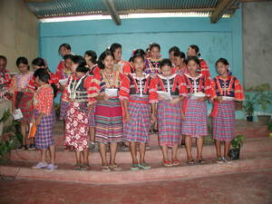

iling 
/ʔiliŋ/
v_rt.
“be_like”
1.
adj.
alike; similar; same; like; equivalent
Wrd.Gloss: like
Iling ka ulaula nu ki Binuy ne anggam ku.
Your face was aliked with my uncle.
O. Syn. henendue
Eng. alike; similar; same; identical; like; uniform; equivalent
Online dict status: -
Usage level: F
v.
for two things (egpekeg-iling, nekeg-iling, theme, egpekeg-) to be the same
Egpekeg-iling ne eg-ukalè ka manuk ney ki Mayilan su hendue te piyak pad ne buyag man-e perem.
Maylan rooster and mine has the same crow.
O. Syn. anggid
Eng. same; identical; matching
Tag. parého; katúlad; túlad
Ceb. parihas; pariho; mao ra
Ilo.: páda-páda; parého; kásla
OCM: Weights and Measures (804)
Online dict status: -
Usage level: F
v.
for someone or something (egpekeg-iling, nekeg-iling, agent, egpekeg-) identical or similar
Egpekeg-iling ka laheng ni Tanya wey Umar.
There's a similarity of the voice of Tanya and Umar.
Pekeg-iling ka ulaula ni Pipi wey si Tata su nekegseping ma sikandan.
Pipi and Tata have similar faces because they are twins.
Eng. similar; alike; identical; same; uniform, to be
Online dict status: -
Usage level: M
adj.
(pekeg-iling, egpekeg-) identical; uniform
Eng. identical; uniform
Online dict status: -
Usage level: M
adj.
(nenekeg-iling-iling, nekeg-) similarity
Nenekeg-iling-iling ka batek te inpanaluub dan ne me kasangkapan.
They wore clothes similarity in color.
Eng. similarity
Online dict status: -
Usage level: R
2.
v.
for something (egpekeiling, nekeiling, theme, egpAkA-) to be as if ex
Eng. as if; be like; copy; imitate; follow
OCM: Weights and Measures (804)
Idiom: iling kayi
—like this
Idiom: iling sika
—like that
Online dict status: -
Usage level: F
v.
for someone (eg-iling, mig-iling/in-iling, eg><ø-) to imitate or to be like someone else (eg-ilingan, in-ilingan/mig-ilingan/pig-ilingan, ilingan, ilingi, location, eg><an-)
Eg-iling kew mulè te miyew wey asu ne layun egpeehetey.
You're like a cat and dog that always fighting.
Eg-iling a perem te amey ku ne talagpanganup piru warà ad nalayam su diyè a nekeuugpè te siyudad.
I really want to be a hunter like my father but I don't know how for I grow in the city.
Warè ku naay-ayari te egsulat su mareet ka mig-ilingan ku.
I did not write it well for I copy it from not good resources.
Ilingi niyu ka igsulat ku kayi te blakburd.
Copy what I have written here in the board.
Ilingan ta ka meupiya ne batasan te amey ta piru igsawilè ta seeyè se mareet.
We will copy the good attitudes of our parents and reject the bad.
Syn. ikul
Eng. imitate; copy
Online dict status: -
Usage level: M
3.
n.
(ilinganan, -an-an) pattern
Eng. pattern
Online dict status: -
Usage level: M
4.
v.
for someone (egpeg-iling, migpeg-iling/impeg-iling, agent, egpeg-) to have their speech and actions to be different (hypocritical) (egpeg-ilingen, impeg-iling/migpeg-iling/pigpeg-iling, patient, egpeg><en-)
Eng. hypocritical
Online dict status: -
Usage level: R
Updated by: RJH,AAA,RJH,AAA,QDL,QDL,RJH
Last updated: 20/Dec/2011
"pekeiling" in text "Making Lead Sinkers"
"iling" in healthbook "Mania te keilangan neg lu-luan ta ka me belad ta?"
"Egpekeiling" in healthbook "Nekey-a ka kahew?"
"iling" in healthbook "Nekey-a ka kahew?"
"iling" in healthbook "Migpamawian ni Inuk ka sumbaley rin ne migpangaliskis"
"Egpekeiling" in healthbook "Migpamawian ni Inuk ka sumbaley rin ne migpangaliskis"
"pekeiling" in song "Panugtuli a ki Hisus"
"pekeiling" in song "Panugtuli a ki Hisus"
"egkeilingan" in song "Mateles si Hisus"
This page last updated: 19/May/2012
Copyright © 2009-2010, Matigsalug Language Christian Association, Inc